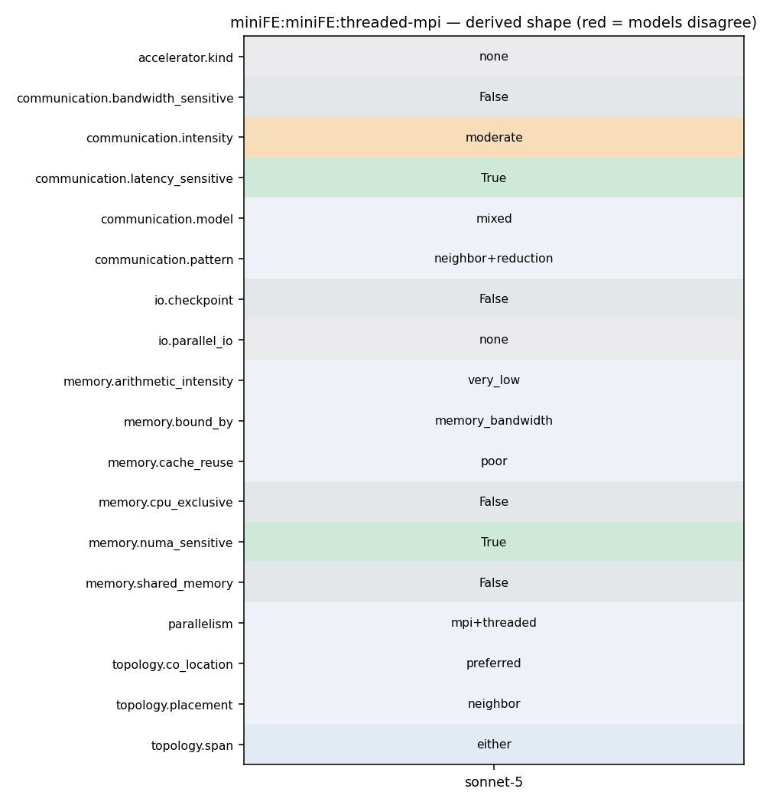

OMP_NUM_THREADS=<T> mpirun -np <N> miniFE.x nx=<X> ny=<Y> nz=<Z> numthreads=<T>
171 double t4min = 0.0; 172 double t4max = 0.0; 173 double t4avg = 0.0; 174 MPI_Allreduce(&t4, &t4min, 1, MPI_DOUBLE, MPI_MIN, MPI_COMM_WORLD); 175 MPI_Allreduce(&t4, &t4max, 1, MPI_DOUBLE, MPI_MAX, MPI_COMM_WORLD); 176 MPI_Allreduce(&t4, &t4avg, 1, MPI_DOUBLE, MPI_SUM, MPI_COMM_WORLD); 177 t4avg = t4avg/((double) size); 178 #endif 179
234 compute_node.parallel_reduce(n, dotop); 235 236 #ifdef HAVE_MPI 237 magnitude local_dot = dotop.result, global_dot = 0; 238 MPI_Datatype mpi_dtype = TypeTraits<magnitude>::mpi_type(); 239 MPI_Allreduce(&local_dot, &global_dot, 1, mpi_dtype, MPI_SUM, MPI_COMM_WORLD); 240 return global_dot; 241 #else 242 return dotop.result; 243 #endif
171 double t4min = 0.0; 172 double t4max = 0.0; 173 double t4avg = 0.0; 174 MPI_Allreduce(&t4, &t4min, 1, MPI_DOUBLE, MPI_MIN, MPI_COMM_WORLD); 175 MPI_Allreduce(&t4, &t4max, 1, MPI_DOUBLE, MPI_MAX, MPI_COMM_WORLD); 176 MPI_Allreduce(&t4, &t4avg, 1, MPI_DOUBLE, MPI_SUM, MPI_COMM_WORLD); 177 t4avg = t4avg/((double) size); 178 #endif 179
236 #ifdef HAVE_MPI 237 magnitude local_dot = dotop.result, global_dot = 0; 238 MPI_Datatype mpi_dtype = TypeTraits<magnitude>::mpi_type(); 239 MPI_Allreduce(&local_dot, &global_dot, 1, mpi_dtype, MPI_SUM, MPI_COMM_WORLD); 240 return global_dot; 241 #else 242 return dotop.result;
234 compute_node.parallel_reduce(n, dotop); 235 236 #ifdef HAVE_MPI 237 magnitude local_dot = dotop.result, global_dot = 0; 238 MPI_Datatype mpi_dtype = TypeTraits<magnitude>::mpi_type(); 239 MPI_Allreduce(&local_dot, &global_dot, 1, mpi_dtype, MPI_SUM, MPI_COMM_WORLD); 240 return global_dot; 241 #else 242 return dotop.result; 243 #endif
460 461 const int ROW_COUNT = A.rows.size(); 462 463 #pragma omp parallel for 464 for(MINIFE_GLOBAL_ORDINAL i=0; i < ROW_COUNT; ++i) { 465 GlobalOrdinal row = A.rows[i]; 466 467 if (bc_rows.find(row) != bc_rows.end()) continue; 468 469 size_t row_length = 0; 470 GlobalOrdinal* cols = NULL; 471 Scalar* coefs = NULL; 472 A.get_row_pointers(row, row_length, cols, coefs); 473 474 Scalar sum = 0; 475 for(size_t j=0; j<row_length; ++j) { 476 if (bc_rows.find(cols[j]) != bc_rows.end()) { 477 sum += coefs[j]; 478 coefs[j] = 0; 479 } 480 } 481 482 #pragma omp atomic 483 b.coefs[i] -= sum*prescribed_value;
34 35 struct Parameters { 36 Parameters() 37 : nx(5), ny(nx), nz(nx), numthreads(1), 38 mv_overlap_comm_comp(0), use_locking(0), 39 load_imbalance(0), name(), elem_group_size(1), 40 use_elem_mat_fields(1), verify_solution(0), 41 device(0),num_devices(2),skip_device(9999),numa(1) 42 {} 43 44 int nx; 45 int ny; 46 int nz; 47 int numthreads; 48 int mv_overlap_comm_comp; 49 int use_locking; 50 float load_imbalance;
86 { 87 #ifdef HAVE_MPI 88 const int num_int_params = 13; 89 int iparams[num_int_params] = {params.nx, params.ny, params.nz, params.numthreads, params.mv_overlap_comm_comp, params.use_locking, 90 params.elem_group_size, params.use_elem_mat_fields, params.verify_solution, 91 params.device, params.num_devices,params.skip_device,params.numa}; 92 MPI_Bcast(&iparams[0], num_int_params, MPI_INT, 0, MPI_COMM_WORLD); 93 params.nx = iparams[0]; 94 params.ny = iparams[1]; 95 params.nz = iparams[2]; 96 params.numthreads = iparams[3]; 97 params.mv_overlap_comm_comp = iparams[4]; 98 params.use_locking = iparams[5]; 99 params.elem_group_size = iparams[6]; 100 params.use_elem_mat_fields = iparams[7];
12 13 #----------------------------------------------------------------------- 14 15 CFLAGS = -O3 -fopenmp 16 CXXFLAGS = $(CFLAGS) 17 18 CPPFLAGS = -I. -I../utils -I../fem $(MINIFE_TYPES) \ 19 $(MINIFE_MATRIX_TYPE) \ 20 -DHAVE_MPI -DMPICH_IGNORE_CXX_SEEK \ 21 -DMINIFE_REPORT_RUSAGE 22 23 LDFLAGS=$(CFLAGS) 24 LIBS= 25 26 # The MPICH_IGNORE_CXX_SEEK macro is required for some mpich versions, 27 # such as the one on my cygwin machine. 28 29 #CXX=mpiicpc 30 #CC=mpiicc 31 32 #CXX=g++ 33 #CC=g++ 34 35 #CXX=icpc
155 156 if(beta == 0.0) { 157 if(alpha == 1.0) { 158 #pragma omp parallel for 159 #pragma vector nontemporal 160 #pragma unroll(8) 161 for(int i=0; i<n; ++i) { 162 wcoefs[i] = xcoefs[i]; 163 } 164 } else { 165 #pragma omp parallel for 166 #pragma vector nontemporal 167 #pragma unroll(8) 168 for(int i=0; i<n; ++i) { 169 wcoefs[i] = alpha * xcoefs[i]; 170 } 171 } 172 } else { 173 if(alpha == 1.0) { 174 #pragma omp parallel for 175 #pragma vector nontemporal 176 #pragma unroll(8) 177 for(int i=0; i<n; ++i) { 178 wcoefs[i] = xcoefs[i] + beta * ycoefs[i];
234 compute_node.parallel_reduce(n, dotop); 235 236 #ifdef HAVE_MPI 237 magnitude local_dot = dotop.result, global_dot = 0; 238 MPI_Datatype mpi_dtype = TypeTraits<magnitude>::mpi_type(); 239 MPI_Allreduce(&local_dot, &global_dot, 1, mpi_dtype, MPI_SUM, MPI_COMM_WORLD); 240 return global_dot; 241 #else 242 return dotop.result; 243 #endif
93 94 MPI_Datatype mpi_dtype = TypeTraits<Scalar>::mpi_type(); 95 96 // Post receives first 97 for(int i=0; i<num_neighbors; ++i) { 98 int n_recv = recv_length[i]; 99 MPI_Irecv(x_external, n_recv, mpi_dtype, neighbors[i], MPI_MY_TAG, 100 MPI_COMM_WORLD, &request[i]); 101 x_external += n_recv; 102 } 103 104 #ifdef MINIFE_DEBUG 105 os << "launched recvs\n"; 106 #endif 107 108 // 109 // Fill up send buffer 110 // 111 112 size_t total_to_be_sent = elements_to_send.size(); 113 #ifdef MINIFE_DEBUG 114 os << "total_to_be_sent: " << total_to_be_sent << std::endl; 115 #endif 116
41 42 ----------------------------------------------------------------------- 43 44 3. Scaling the MiniFE Mantevo Mini-App Problem 45 46 To scale the MiniFE problem size, we typically apply the following 47 rules: 48 49 (1) Either: double the X dimension for one run, then double the 50 Y-dimension for the next run. Keep the Z-dimension fixed. This is useful 51 for some application runs. 52 53 (2) Or: define a base problem size (nx * ny * nz) and then use the 54 following equation set nz = ny = nz = cbrt( (base_nx * base_ny * 55 base_nz) * (number of MPI ranks) ). This is useful for some other 56 application runs. 57 58 Note - that (1) and (2) create different communication volumes/patterns 59 and execute over threaded compute resources. They are both of interest. 60 61 ----------------------------------------------------------------------- 62 63 4. Bugs/Issues/Questions with MiniFE?